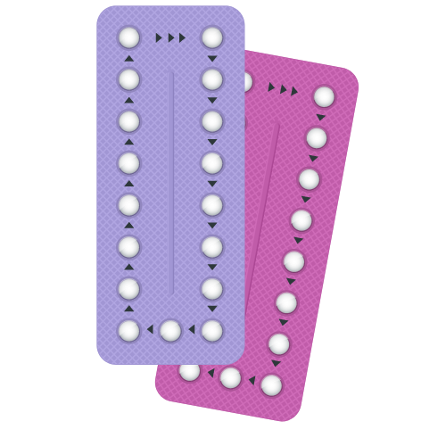
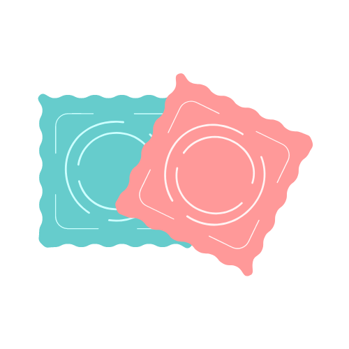
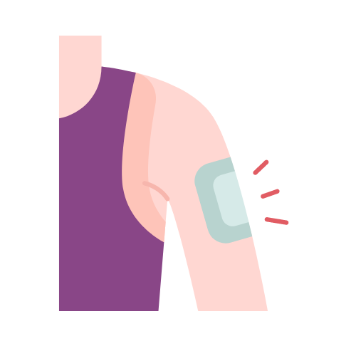

Métodos de prevenção
Há vários tipos de métodos de prevenção, alguns deles são
- Pílula Anticoncepcional 
- O que é: Comprimidos hormonais tomados diariamente.
- Função: Impede a ovulação, altera o muco cervical e o revestimento uterino, dificultando a fertilização e a implantação do óvulo.
- Preservativos 
- O que é: Capa e dispositivo de látex ou poliuretano usado antes da relação sexual
- Função: Barreira que protege contra gravidez e DST
- Adesivo Contraceptivo 
- O que é: Adesivo colocado na pele.
- Função: Libera hormônios que impedem a ovulação e alteram o muco cervical. Troca-se semanalmente por três semanas, com uma semana de pausa.
- Envolvimento dos Pais